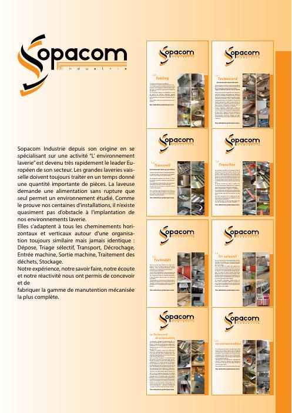
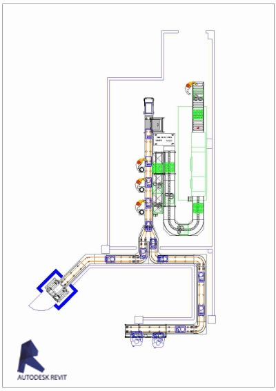
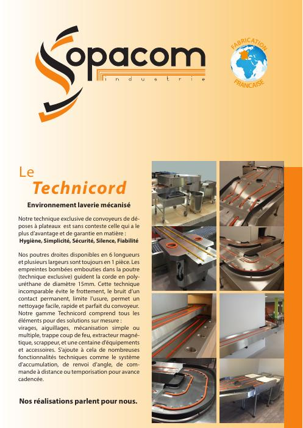
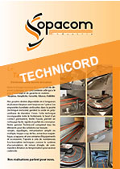
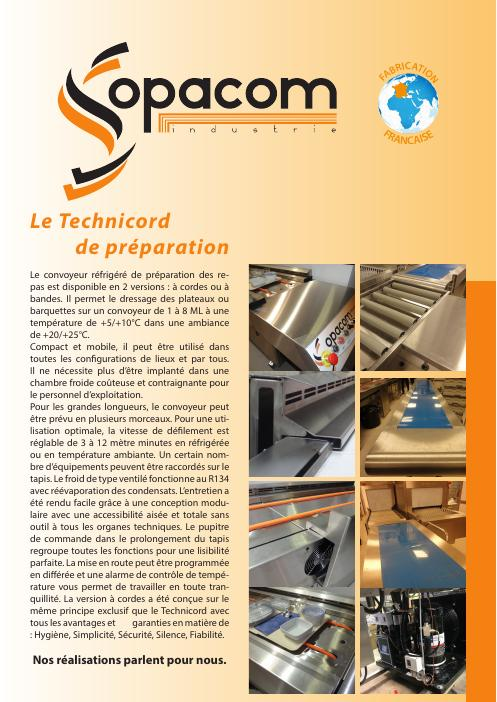
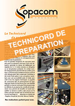
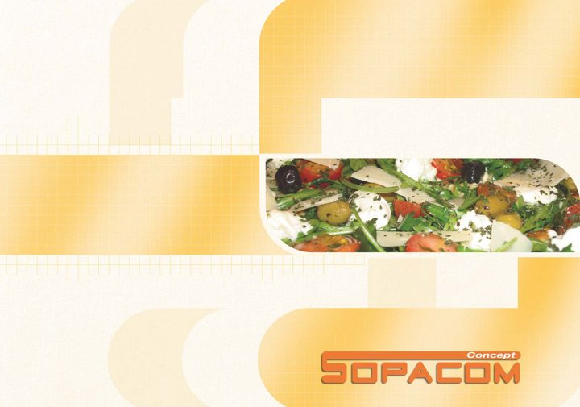

FR · inclus§ Documentation
Bibliothèque documentaire.
Fiches produits, présentation commerciale et bibliothèque CAO, classées par gamme et par activité.

Bibliothèque CAO · 241 blocs
Ouvrir la bibliothèque technique →Tous les plans AutoCAD, consultables et filtrables.
Général

FR · site actuelBibliothèque AutoCAD 2D/3D Revit
Technicord

FR · inclusTechnicord

EN · site actuelTechnicord

Transflex
Transflex
 EN · site actuel
EN · site actuelTransflex

Technicord de préparation

FR · inclusTechnicord de préparation

EN · site actuelTechnicord de préparation
Les incontournables

Sopacom Concept
 FR · inclus
FR · inclusSushi Concept — Le sushi de A à Z

FR · inclusPizza Concept — La pizza de A à Z
À compléter / à confirmerSeules 4 documentations ont été transmises (incluses dans le site et consultables directement). Les autres fiches pointent vers le site actuel ; à rapatrier avant la mise en ligne. Catalogue général et tarif PDF à fournir.